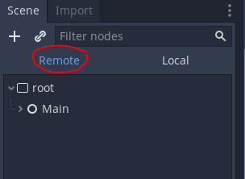

How To Structure Your Godot Project (so You Don't Get Confused)

This is a guest post by KP, whom I found by a very detailed and thoughtful comment he posted on Reddit /r/godot. If you like the post, make sure to check out his Youtube channel
A tale as old as time. You just started to get familiar with Godot, and your project is starting to get huge. You have a mess of folders with scenes and nodes and resources and images and audio files and every time you look at the 'FileSystem' tab you feel totally lost. You went here and left feeling unsatisfied.
Don't worry! I have some tips for you that will make all your problems melt away. This is just how I do it. Some of it is based on Godot's best practices, but as far as I can tell there isn't a consensus on how to set up your FilesSystem in the way there is with Java for example. So we're all on our own. But it doesn't have to be this way!
Setting up your file system
I like to have a 'scenes' folder, an 'assets' folder, and a 'src' folder (for autoload scripts).
For more complex games, I also include a 'utils' folder at the top level for any type of menu that is used for development but isn't going to be part of the main game. That way you can easily exclude it when exporting. Also you'll have an 'addons' folder here if you install any plugins.
Personally I think the top level part is mostly preference, so do whatever makes sense to you. But do think about it early and stick with your structure, because moving stuff around can break things. If you do need to move stuff around, (especially important because I know some of you are going to be applying this to your already large messy projects) right click on the file in the file system and use 'Move To...'.
Dragging and dropping works too, but I often find that the 'FileSystem' tab isn't very clear on where it's going to put stuff and I end up moving things to some folder that I can't see and have no idea where my stuff went. Either way, when you move stuff in godot it does some things in the background so it doesn't lose track of where things are, but you'll still probably have to fix some things if you're moving a resource and are referencing it somewhere.
Even if you think you've done everything right, be careful; if you reference a path anywhere in your code using a string, you'll have to go through every script and change it, and Godot won't help you. It'll just throw an error at runtime when it can't find the file. In this case I reccomend using a text editor to find and replace on all of your files. This is a big reason to reference scene and resource paths using export var resource_inst : Resource rather than using Strings.
Whatever else you do, don't move files around outside of Godot. You'll wish you handn't I promise. I'll explain why later.
Making a main scene, and telling Godot where to start
It's good to have somewhere to start and set everything up. Make a scene called 'main.tscn' in the 'scenes' folder with a generic node object called 'Main', and attach a script called 'main.gd'. This node will always be around, and you can use it to set things up when your game starts. If your game has a main menu, you will probably want to start with that, so make a control node that is a child of the Main node.
You can set this as the 'Main Scene' in project settings. This tells godot where to start when you click the 'play' button, and this is the scene that will start first when you export your application.
If you don't already have one set, you can also do this from the right-click menu in the 'FileSystem' tab.
There's something important you should know about this though. When you set a scene as the main scene, Godot will load it when the application starts. Meaning the Godot application, not your game. Meaning if you do something to the main scene that prevents Godot from opening it, (Like moving stuff around outside of Godot, like I already told you not to) Godot will not be able to open your project. To fix this you can open the project.properties file in a text editor and delete this line:
You might be wondering; "Why not just put the stuff that should stay around in an autoload?" One word; Encapsulation. Autoloads are accessable from everywhere, and you don't want this stuff to be accessable from everywhere, you just want it to be around. Globals can be dangerous, and are a fantastic way to get confused when things go wrong.
Names and why they're important
Styling is important when thinking about project structure if you want to keep yourself from getting confused. Refer to Godot's style guide for best practices about scripting style and file naming conventions.
From the Godot documentation:
Use snake_case for file names. For named classes, convert the PascalCase class name to snake_case:
# This file should be saved as `weapon.gd`.
class_name Weapon
extends Node# This file should be saved as `yaml_parser.gd`.
class_name YAMLParser
extends ObjectThis is consistent with how C++ files are named in Godot's source code. This also avoids case sensitivity issues that can crop up when exporting a project from Windows to other platforms.
This applies to all types of files. Scenes, scripts, resources, everything. Note that Godot automatically suggests filenames as whatever the root node is named, which should be PascalCase (like camelCase but first letter capitalized). So you should always rename them to snake_case for readability, and in some cases, system compatibility. Do use PascalCase when naming nodes and classes, and snake_case for properties and functions. That's how the engine does it and you want things to be consistent, again, so you don't get confused.
A quick sidebar while we're on the subject of naming; You should always rename every new node you create. Try really hard not to leave them with the default name. The reason for this is that node names are keywords in GDScript. So if you leave all your sprites named "Sprite", in your scripts "Sprite" and "$Sprite" mean two very different things. And what if you have more than one Sprite in a scene? You want to know which one is which. If you leave them as their defaults it won't break anything, but you're just asking to get confused.
As you start making more and more scenes, you're going to want to make some sub-folders. I like to put main.tscn at the top level of the scenes folder along with any scenes that are going to be autoloaded, or used by Main but don't have any children. Then for everything else, I roughly break things into 'levels', 'characters', 'menus', and possibly 'items' (I'm tempted to use 'objects' instead of 'items' but since an Object is an actual type in Godot it's not a great name for a folder). 'network' goes at this level if the game needs it. Of course what folders you use and how you name them depends on the type of game you're making, but that schema is pretty generic I think.
When making scenes, the ones that mostly stand alone go at the top level of their sub-folder, and any that contain sub-scenes or have inherited scenes get their own sub-folder. If a scene uses resources that are very situational that are saved as files and only ever used by that small group of scenes (themes and button groups for menus are a good example), they go in their own 'resources' sub-folder alongside the highest-level scene that uses them.
I usually also have a '_debug' folder in the 'scenes' folder, prefixed with underscore so it gets sorted to the top of the folder. This is where things like debug overlays or testing levels go. You can also exclude that folder in your export configuration as long as you don't change your mind and reference your debug code in your actual game :^)
For assets I group roughly into 'sprites' (or something like 'models' then 'meshes', 'textures', and 'materials' for 3D), 'audio', 'fonts', and 'json'. I also put my custom resource scripts here in a 'custom_types' folder. I do this for two reasons: First, because I want any additions I'm making to the engine to be in one place at a very high-level, and second because many of the custom resources I make will also get their own sub-folder in this assets folder. (Since assets are also loaded as resources it does make sense, to me anyway). I'm not totally sure I like that yet, but I think it's too late for me to change now :^) :^) :^)
Dividing your content into scenes, running scenes on their own, and why you should NEVER use get_parent()
Any group of nodes you want to have more than one instance of should be its own scene. For instance, the player should be its own scene, areas should have their own scene, enemies should have their own scene, and bullets should have their own scene. Dividing things up like this has implications for how you structure your file system, because you might need to reference the path to other scenes. So it's good to keep scenes that are instances of other scenes in sub-folders and group them in whatever way makes sense.
Sometimes this isn't possible, because some scenes need to be referred to all over the place. That's fine, just try to keep it to a minimum if possible. Even if only because it makes things less confusing.
You can run scenes on their own with the 'Play Scene' button at the top right of the editor. Try it and watch the remote tab. Godot will treat it as though the scene you have open is the main scene. Your autoloads will still be there, but none of your other nodes.
This is why you should try to avoid using get_parent(). If your nodes only know about their children that are guaranteed to exist at runtime, you can break any branch of the tree off into its own scene and run it to test things out without any problems.
If you use get_parent(), your logic will behave differently when running the scene on its own versus running your actual game. Sometimes that's okay, like if you want to add a child alongside the node that has the script attached, because what the parent is doesn't really matter. In that case you're just adding a child to it which is possible with any type of node so it'll behave the same way no matter where you're running it from. Even then I still try to avoid that whenever possible.
The lie of the change_scene() function, what it actually does, and how to think about scenes
Once you're running your game, your scenes aren't really scenes that are 'running' anymore. Scenes are definitions of a group of nodes that can be instanced. When you run a scene in the editor, Godot starts the scene tree with the root node of your scene as the main node. When the game is running, you aren't ever 'in a scene'. You're in the scene tree, and within the scene tree, your scenes are instantiated and now you have instances of the nodes they contain.
When you use change_scene(), Godot frees the main node and replaces it with the nodes in whatever scene you pass it. You can watch the 'remote' tab to see what's happening.

So if you want to 'change scenes', you can use change_scene(), but know that it is replacing everything you have loaded other than autoload singletons. No matter where in the tree you called it from. That's fine in simple games, but it doesn't scale well. The bigger your game gets, the more data you will need to pass between scenes, and storing and passing tons of data between scenes isn't something you want to be doing with AutoLoads (How to use AutoLoads effectivley for large projects is a whole other topic.) Personally I never use change_scene() because I always want the Main node around to pass data between things, and there's usually a player node I want around all the time.
I like to have a 'main_menu' and a 'game_world' scene, the first being a Control node and second being Node2D or Spatial for 3D. Then when you want to go from your main menu into the game, you can free the main menu node and make an instance of the game world.
export var game_scene : PackedScene
var game_world : Node2D
func start_game():
$MainMenu.queue_free()
game_world = load(game_scene).instance()
add_child(game_world)
Voila! You have 'changed scenes', from the main menu to the game world, but you still have your "Main" node. This has the added benefit of letting you do any other setup you want in between changing scenes, which wouldn't be possible if you had freed the entire scene tree. For instance, you can have a transition that fades to black and fades back in that exists in the main scene, and reuse that when you start the game and when you change levels in the game.
Once you're in the game, we can use this same construct to change "room" or "level" scenes or whatever you want to call them without losing our player node. Keep the player node as a child of the game world, and when you want to move to a new room, have the game world free the current room and instance the next one.
Inheritance, sharing and extending scripts, and editable children
There are a bunch of ways to have scenes and nodes share properties and behaviors, and they all have implications for how you organize your project. A very common one is the 'inherited scene'.
This creates a new scene with instances of all the parent scene's nodes, except all but the main one are greyed-out.
When you start it that way, it's exactly the same as its parent. You can add nodes, change properties on the children, and 'extend' the scripts they're using. The one thing you can't do is delete nodes that are children of the parent.
You can also have the scripts in your inherited scene add their own specific logic to the parents' scripts using the 'extend script' option in the right-click menu of the scene tab.
This creates a new script with 'extends "parent_script.gd" at the top, and it will have access to all the functions and variables of the parent.
You can add functions that will replace the functionality of the functions in the parent. To run the parent method in the extended script, you can call it like this:
func my_function():
.my_function()
So that the parent's function will run and then your new code will run after.
When extending these scripts, I like to keep them alongside the scene that is instancing the child, or in a sub-folder depending on how many there are.
Try to name them similarly to the script they're extending so it's more obvious what they're referencing and what they do.
Another thing that behaves very much like inherited scenes is 'editable children'. It is an option that is available when you instance a scene in another scene. This basically creates a one-time inherited scene that is local to the scene you are using it in, so you can make changes to that one instance.
The things you can do to an editable child are basically the same as how you can interact with the nodes of an inherited scene. You can add children, change anything on the node's children, and extend any of the scripts of the children, but you can't delete any of the instanced scene's children (the greyed-out ones).
Yet another way to re-use stuff from one scene to create another is 'Duplicate...".
This creates a new scene that is seperate from the scene you duplicated, but still has the same nodes as the old one. Any changes you make to the old one won't be applied to the duplicate. However, the duplicate Does not create new resources if they are referencing an external file. Any resources loaded into the original will also be referenced in the duplicate. This is a good thing! Image textures are resources. If you make a duplicate of a bullet you don't want it to copy your bullet png, you're going to already have the new texture you want and tell it which texture to use yourself. This includes scripts! Sometimes you want to keep the script attached, and sometimes you might want to make a new script. Also, stuff like shape resources applied to collision shapes might be shared if you saved any of them as a file. This does not apply to sub resources, (Resources that aren't saved as files) since sub resources are fully contained within the scene file.
How to get nodes, and why you should never use get_node("PathToNode")
There are a couple ways to reference child nodes in a script. Two very common ones are:
get_node("PathToNode")
$PathToNode
There's a better way to use get_node() though:
var path_to_node := NodePath("PathToNode")
get_node(path_to_node)
Although using "$" is usually still preferable when you know exactly which node you want.
Any text typed out in quotes is called a "String literal" in the programming world. The problem with using string literals is that they are imperfect. You can type in anything you want and the compiler/interpreter will accept it until it has to deal with with your messy typos and by then it's already too late. get_node("PathToNode") and $PathToNode operate basically the same way in the background, but the $ operator has the bonus of identifying the nodes that you are accessing directly via their name, which helps you not get confused. The use of "$" isn't a string literal, but it isn't checked by the compiler either, it just converts everything after it into a node path object and calls get_node() during runtime. In my oppinon, it enforces good programming practices. As an example, you can't pass a string literal you defined somewhere else to the $ operator. However, it's even better to avoid referencing nodes by their names at all! The name of a node isn't always something that is set in stone. If you duplicate a node, add the duplicate as a child of the parent and free the original, the duplicate will be named something else. You can even just change a node's name using get_node("PathToNode").name="NowIDontWorkAnymore". It's better to figure out the path to the node you need in some other way like using an exported NodePath variable, and then keep a reference to it like this:
export var path_to_character : NodePath
var character : KinematicBody2D
func _ready() -> null:
character = get_node(path_to_character)
Since you might want to refer to different characters here, you have to and should use get_node.
Oh yeah and whatever you do, don't you EVER EVER EVER use get_node("/root"). I'm not gonna explain myself on this one, I feel like you should be able to figure it out by now.
Splitting off branches, now you can too!
You might be asking yourself, "How is any of this relevant? I only care about where to put my files". Hold your horses, I'm getting there! The reason all of that node naming stuff is important is that the way your scripts interact with their children has big implications for splitting branches of your scene off into their own scenes. And splitting branches off into their own scenes is very very helpful for keeping your project well organized.
Try to make sure your nodes only interact with their direct children, or at least very near children. If you can keep everything that way, you can always break any branch of the scene tree off into its own scene and have its logic fully contained in that scene. When a node's behavior depends on its parent, it will behave differently when you run it on its own and when it's instantiated in other places. In other words, making sure that your nodes only interact with their near children promotes modularity and encapsulation which is very important in any language that is even remotely object-oriented (which Godot is. Nobody's perfect.)
When you absolutely need to deal with distant children, use signals or groups.
So instead of
$Me/World/Level/House/Room/Guys/Enemy1.hp -= 100
$Me/World/Level/House/Room/Guys/Enemy2.hp -= 100
$Me/World/Level/House/Room/Guys/Enemy3.hp -= 100
Put the enemy nodes in a group, give them a take_damage(dmg:int) function, and use something like:
func explode() -> void:
get_tree().call_group("enemies", "take_damage", 100)
or
signal exploded(damage)
func _ready_() -> void:
for enemy in get_tree().get_nodes_in_group("enemies"):
connect("exploded", enemy, "take_damage")
func explode() -> void:
emit_signal("exploded", 100)
This way, it doesn't matter if the enemies exist or not or if there's even a house or room or level. It will just throw the signal to explode into the void and keep doing its thing.
Of course, the platonic ideal of a godot project would only ever interact with nodes by using get_children() or exporting node paths or putting things in groups, but at some point you're going to have to reference nodes by their names. There's really no way around it. When you do have to, just try to make sure it's a node that is guaranteed to be in the scene and won't ever be freed, moved, or duplicated.
So anyway...
I should say that other than the Godot style guide stuff and use of signals and groups, I don't think any of this could be called a 'standard'. It's what works for me, and informed by my experience as a software developer. A lot of my statments about what you "should" and "shouldn't" do are very debatable. Lots of people use change_scene() just fine. I'd be willing to hear arguments about keeping image and audio resources in the same folder as the scenes that use them instead of splitting them off. In any case, if something works for you, by all means keep doing it. But hopefully something I said can help dispel some confusion.
I put together a small template project that you can find on my github. This is based on a demo game that's a more fleshed out, showing some examples of the more complex structes I talked about, like changing levels while keeping the player node around. The link to that github is here, and you can play it on itch.io.
If you want to see a video on how to use the template, here is a simple example:
And finally, if you made it this far but also hate reading, consider checking out my youtube channel where I post devlogs and go in depth on some more intermediate Godot topics.
So what are you waiting for? Get to work!!!
Shantnu: We have planned more in Godot articles, sign up below to know when they are out.